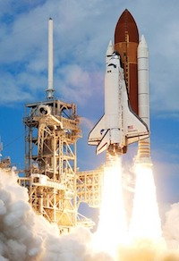
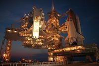
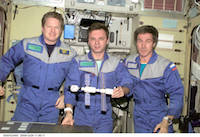
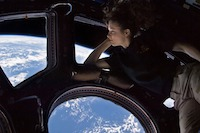

President Ronald Reagan's State of the Union Address directs NASA to build an international space station within the next 10 years.
The first segment of the ISS launches: a Russian proton rocket named Zarya ("sunrise").
Unity, the first U.S.-built component of the International Space Station launches—the first Space Shuttle mission dedicated to assembly of the station.
Astronaut Bill Shepherd and cosmonauts Yuri Gidzenko and Sergei Krikalev become the first crew to reside onboard the station, staying several months.
The ISS celebrates its 10-year anniversary of continuous human occupation. Since Expedition 1 in the fall of 2000, 202 people had visited the station.
